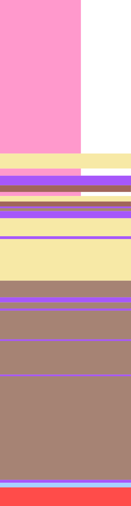

Striplog basics#
This notebooks looks at the main striplog object. For the basic objects it depends on, see Basic objects.
First, import anything we might need.
import matplotlib.pyplot as plt
%matplotlib inline
import numpy as np
import striplog
striplog.__version__
# If you get a lot of warnings here, try running this block again.
'unknown'
from striplog import Legend, Lexicon, Interval, Component
legend = Legend.builtin('NSDOE')
lexicon = Lexicon.default()
Making a striplog#
from striplog import Striplog
print(Striplog.__doc__)
A Striplog is a sequence of intervals.
We will build them from LAS files or CSVs.
Args:
list_of_Intervals (list): A list of Interval objects.
source (str): A source for the data. Default None.
order (str): 'auto', 'depth', 'elevation', or 'none'. Please refer to
the documentation for details. Best idea is to let the default
work. Default: 'auto'.
Here is one of the images we will convert into striplogs:
imgfile = "M-MG-70_14.3_135.9.png"
strip = Striplog.from_img(imgfile, 14.3, 135.9, legend=legend)
strip
/opt/hostedtoolcache/Python/3.10.2/x64/lib/python3.10/site-packages/striplog/striplog.py:906: UserWarning: from_img() is deprecated; please use from_image()
warnings.warn(w)
Striplog(26 Intervals, start=14.3, stop=135.9)
strip.plot(legend, ladder=True, aspect=5)
Representations of a striplog#
There are several ways to inspect a striplog:
printprints the contents of the striplogtopshows us a list of the primary lithologies in the striplog, in order of cumulative thicknessplotmakes a plot of the striplog with coloured bars
print(strip[:5])
{'top': Position({'middle': 14.3, 'units': 'm'}), 'base': Position({'middle': 51.24117647058824, 'units': 'm'}), 'description': '', 'data': {}, 'components': [Component({'lithology': 'anhydrite'})]}
{'top': Position({'middle': 51.24117647058824, 'units': 'm'}), 'base': Position({'middle': 54.81764705882354, 'units': 'm'}), 'description': '', 'data': {}, 'components': [Component({'lithology': 'sandstone', 'colour': 'grey', 'grainsize': 'vf-f'})]}
{'top': Position({'middle': 54.81764705882354, 'units': 'm'}), 'base': Position({'middle': 56.55882352941177, 'units': 'm'}), 'description': '', 'data': {}, 'components': [Component({'lithology': 'anhydrite'})]}
{'top': Position({'middle': 56.55882352941177, 'units': 'm'}), 'base': Position({'middle': 58.86470588235295, 'units': 'm'}), 'description': '', 'data': {}, 'components': [Component({'lithology': 'dolomite'})]}
{'top': Position({'middle': 58.86470588235295, 'units': 'm'}), 'base': Position({'middle': 60.464705882352945, 'units': 'm'}), 'description': '', 'data': {}, 'components': [Component({'lithology': 'siltstone', 'colour': 'red'})]}
strip.unique
[(Component({'lithology': 'siltstone', 'colour': 'grey'}), 46.16470588235293),
(Component({'lithology': 'anhydrite'}), 39.67058823529412),
(Component({'lithology': 'sandstone', 'colour': 'grey', 'grainsize': 'vf-f'}),
19.200000000000003),
(Component({'lithology': 'dolomite'}), 8.282352941176498),
(Component({'lithology': 'volcanic'}), 4.42352941176469),
(Component({'lithology': 'siltstone', 'colour': 'red'}), 2.7764705882352843),
(Component({'lithology': 'limestone'}), 1.082352941176481)]
It’s easy enough to visualize this. Perhaps this should be a method…
depth = 0
list_of_int = []
for i in strip.unique:
list_of_int.append(Interval(depth, depth+i[1], components=[i[0]]))
depth += i[1]
Striplog(list_of_int).plot(legend, aspect=3)
Plot#
If you call plot() on a Striplog you’ll get random colours (one per rock type in the striplog), and preset aspect ratio of 10.
strip.plot()
For more control, you can pass some parameters. You’ll probably always want to pass a legend.
strip.plot(legend, ladder=True, aspect=5, ticks=5)
hashy_csv = """colour,width,hatch,component colour,component grainsize,component lithology
#dddddd,1,---,grey,,siltstone,
#dddddd,2,xxx,,,anhydrite,
#dddddd,3,...,grey,vf-f,sandstone,
#dddddd,4,+--,,,dolomite,
#dddddd,5,ooo,,,volcanic,
#dddddd,6,---,red,,siltstone,
#dddddd,7,,,,limestone,
"""
hashy = Legend.from_csv(text=hashy_csv)
strip.plot(hashy, ladder=True, aspect=6, lw=1)
Manipulating a striplog#
Again, the object is indexable and iterable.
print(strip[:3])
{'top': Position({'middle': 14.3, 'units': 'm'}), 'base': Position({'middle': 51.24117647058824, 'units': 'm'}), 'description': '', 'data': {}, 'components': [Component({'lithology': 'anhydrite'})]}
{'top': Position({'middle': 51.24117647058824, 'units': 'm'}), 'base': Position({'middle': 54.81764705882354, 'units': 'm'}), 'description': '', 'data': {}, 'components': [Component({'lithology': 'sandstone', 'colour': 'grey', 'grainsize': 'vf-f'})]}
{'top': Position({'middle': 54.81764705882354, 'units': 'm'}), 'base': Position({'middle': 56.55882352941177, 'units': 'm'}), 'description': '', 'data': {}, 'components': [Component({'lithology': 'anhydrite'})]}
print(strip[-1].primary.summary())
Volcanic
for i in strip[:5]:
print(i.summary())
36.94 m of anhydrite
3.58 m of sandstone, grey, vf-f
1.74 m of anhydrite
2.31 m of dolomite
1.60 m of siltstone, red
len(strip)
26
import numpy as np
np.array([d.top.z for d in strip[5:13]])
array([60.46470588, 61.45294118, 62.77058824, 63.94705882, 64.37058824,
65.07647059, 66.77058824, 71.1 ])
You can even index into it with an iterable, like a list of indices. The result is a striplog.
indices = [2,4,6]
strip[indices].plot(legend, aspect=5)
Slicing and indexing#
Slicing returns a new striplog:
strip[1:3]
Striplog(2 Intervals, start=51.24117647058824, stop=56.55882352941177)
rock = strip.find('sandstone')[1].components[0]
rock2 = Component({'lithology':'shale', 'colour':'grey'})
iv = Interval(top=300, base=350, description='', components=[rock, rock2])
strip[-3:-1] + Striplog([iv])
Striplog(3 Intervals, start=129.68823529411765, stop=350.0)
del strip[4]
strip.plot(aspect=5)
Read or write CSV or LAS3#
print(strip.to_las3())
~Lithology_Parameter
LITH . Striplog : Lithology source {S}
LITHD. MD : Lithology depth reference {S}
~Lithology_Definition
LITHT.M : Lithology top depth {F}
LITHB.M : Lithology base depth {F}
LITHD. : Lithology description {S}
~Lithology_Data | Lithology_Definition
14.3,51.24117647058824,Anhydrite
51.24117647058824,54.81764705882354,"Sandstone, grey, vf-f"
54.81764705882354,56.55882352941177,Anhydrite
56.55882352941177,58.86470588235295,Dolomite
60.464705882352945,61.45294117647059,Anhydrite
61.45294117647059,62.77058823529413,"Sandstone, grey, vf-f"
62.77058823529413,63.94705882352942,"Siltstone, red"
63.94705882352942,64.37058823529412,Dolomite
64.37058823529412,65.0764705882353,"Siltstone, grey"
65.0764705882353,66.77058823529413,Dolomite
66.77058823529413,71.10000000000001,"Sandstone, grey, vf-f"
71.10000000000001,71.80588235294118,Dolomite
71.80588235294118,81.78235294117647,"Sandstone, grey, vf-f"
81.78235294117647,85.78235294117647,"Siltstone, grey"
85.78235294117647,87.00588235294119,Dolomite
87.00588235294119,88.51176470588236,"Siltstone, grey"
88.51176470588236,88.98235294117647,Dolomite
88.98235294117647,95.9,"Siltstone, grey"
95.9,96.2764705882353,Dolomite
96.2764705882353,104.37058823529412,"Siltstone, grey"
104.37058823529412,104.74705882352941,Dolomite
104.74705882352941,129.68823529411765,"Siltstone, grey"
129.68823529411765,130.39411764705883,Dolomite
130.39411764705883,131.47647058823532,Limestone
131.47647058823532,135.9,Volcanic
strip.source
'Image'
csv_string = """top, base, lithology
200.000, 230.329, Anhydrite
230.329, 233.269, Grey vf-f sandstone
233.269, 234.700, Anhydrite
234.700, 236.596, Dolomite
236.596, 237.911, Red siltstone
237.911, 238.723, Anhydrite
238.723, 239.807, Grey vf-f sandstone
239.807, 240.774, Red siltstone
240.774, 241.122, Dolomite
241.122, 241.702, Grey siltstone
241.702, 243.095, Dolomite
243.095, 246.654, Grey vf-f sandstone
246.654, 247.234, Dolomite
247.234, 255.435, Grey vf-f sandstone
255.435, 258.723, Grey siltstone
258.723, 259.729, Dolomite
259.729, 260.967, Grey siltstone
260.967, 261.354, Dolomite
261.354, 267.041, Grey siltstone
267.041, 267.350, Dolomite
267.350, 274.004, Grey siltstone
274.004, 274.313, Dolomite
274.313, 294.816, Grey siltstone
294.816, 295.397, Dolomite
295.397, 296.286, Limestone
296.286, 300.000, Volcanic
"""
strip2 = Striplog.from_csv(text=csv_string, lexicon=lexicon)
Notice the warning about a missing term in the lexicon.
Component.from_text('Grey vf-f sandstone', lexicon)
| lithology | sandstone |
| grainsize | vf-f |
| colour | grey |
las3 = """~Lithology_Parameter
LITH . : Lithology source {S}
LITHD. MD : Lithology depth reference {S}
~Lithology_Definition
LITHT.M : Lithology top depth {F}
LITHB.M : Lithology base depth {F}
LITHN. : Lithology name {S}
~Lithology_Data | Lithology_Definition
200.000, 230.329, Anhydrite
230.329, 233.269, Grey vf-f sandstone
233.269, 234.700, Anhydrite
234.700, 236.596, Dolomite
236.596, 237.911, Red siltstone
237.911, 238.723, Anhydrite
238.723, 239.807, Grey vf-f sandstone
239.807, 240.774, Red siltstone
240.774, 241.122, Dolomite
241.122, 241.702, Grey siltstone
241.702, 243.095, Dolomite
243.095, 246.654, Grey vf-f sandstone
246.654, 247.234, Dolomite
247.234, 255.435, Grey vf-f sandstone
255.435, 258.723, Grey siltstone
258.723, 259.729, Dolomite
259.729, 260.967, Grey siltstone
260.967, 261.354, Dolomite
261.354, 267.041, Grey siltstone
267.041, 267.350, Dolomite
267.350, 274.004, Grey siltstone
274.004, 274.313, Dolomite
274.313, 294.816, Grey siltstone
294.816, 295.397, Dolomite
295.397, 296.286, Limestone
296.286, 300.000, Volcanic
"""
strip3 = Striplog.from_las3(las3, lexicon)
print(strip3)
{'top': Position({'middle': 200.0, 'units': 'm'}), 'base': Position({'middle': 230.329, 'units': 'm'}), 'description': 'Anhydrite', 'data': {}, 'components': [Component({'lithology': 'anhydrite'})]}
{'top': Position({'middle': 230.329, 'units': 'm'}), 'base': Position({'middle': 233.269, 'units': 'm'}), 'description': 'Grey vf-f sandstone', 'data': {}, 'components': [Component({'lithology': 'sandstone', 'grainsize': 'vf-f', 'colour': 'grey'})]}
{'top': Position({'middle': 233.269, 'units': 'm'}), 'base': Position({'middle': 234.7, 'units': 'm'}), 'description': 'Anhydrite', 'data': {}, 'components': [Component({'lithology': 'anhydrite'})]}
{'top': Position({'middle': 234.7, 'units': 'm'}), 'base': Position({'middle': 236.596, 'units': 'm'}), 'description': 'Dolomite', 'data': {}, 'components': [Component({'lithology': 'dolomite'})]}
{'top': Position({'middle': 236.596, 'units': 'm'}), 'base': Position({'middle': 237.911, 'units': 'm'}), 'description': 'Red siltstone', 'data': {}, 'components': [Component({'lithology': 'siltstone', 'colour': 'red'})]}
{'top': Position({'middle': 237.911, 'units': 'm'}), 'base': Position({'middle': 238.723, 'units': 'm'}), 'description': 'Anhydrite', 'data': {}, 'components': [Component({'lithology': 'anhydrite'})]}
{'top': Position({'middle': 238.723, 'units': 'm'}), 'base': Position({'middle': 239.807, 'units': 'm'}), 'description': 'Grey vf-f sandstone', 'data': {}, 'components': [Component({'lithology': 'sandstone', 'grainsize': 'vf-f', 'colour': 'grey'})]}
{'top': Position({'middle': 239.807, 'units': 'm'}), 'base': Position({'middle': 240.774, 'units': 'm'}), 'description': 'Red siltstone', 'data': {}, 'components': [Component({'lithology': 'siltstone', 'colour': 'red'})]}
{'top': Position({'middle': 240.774, 'units': 'm'}), 'base': Position({'middle': 241.122, 'units': 'm'}), 'description': 'Dolomite', 'data': {}, 'components': [Component({'lithology': 'dolomite'})]}
{'top': Position({'middle': 241.122, 'units': 'm'}), 'base': Position({'middle': 241.702, 'units': 'm'}), 'description': 'Grey siltstone', 'data': {}, 'components': [Component({'lithology': 'siltstone', 'colour': 'grey'})]}
{'top': Position({'middle': 241.702, 'units': 'm'}), 'base': Position({'middle': 243.095, 'units': 'm'}), 'description': 'Dolomite', 'data': {}, 'components': [Component({'lithology': 'dolomite'})]}
{'top': Position({'middle': 243.095, 'units': 'm'}), 'base': Position({'middle': 246.654, 'units': 'm'}), 'description': 'Grey vf-f sandstone', 'data': {}, 'components': [Component({'lithology': 'sandstone', 'grainsize': 'vf-f', 'colour': 'grey'})]}
{'top': Position({'middle': 246.654, 'units': 'm'}), 'base': Position({'middle': 247.234, 'units': 'm'}), 'description': 'Dolomite', 'data': {}, 'components': [Component({'lithology': 'dolomite'})]}
{'top': Position({'middle': 247.234, 'units': 'm'}), 'base': Position({'middle': 255.435, 'units': 'm'}), 'description': 'Grey vf-f sandstone', 'data': {}, 'components': [Component({'lithology': 'sandstone', 'grainsize': 'vf-f', 'colour': 'grey'})]}
{'top': Position({'middle': 255.435, 'units': 'm'}), 'base': Position({'middle': 258.723, 'units': 'm'}), 'description': 'Grey siltstone', 'data': {}, 'components': [Component({'lithology': 'siltstone', 'colour': 'grey'})]}
{'top': Position({'middle': 258.723, 'units': 'm'}), 'base': Position({'middle': 259.729, 'units': 'm'}), 'description': 'Dolomite', 'data': {}, 'components': [Component({'lithology': 'dolomite'})]}
{'top': Position({'middle': 259.729, 'units': 'm'}), 'base': Position({'middle': 260.967, 'units': 'm'}), 'description': 'Grey siltstone', 'data': {}, 'components': [Component({'lithology': 'siltstone', 'colour': 'grey'})]}
{'top': Position({'middle': 260.967, 'units': 'm'}), 'base': Position({'middle': 261.354, 'units': 'm'}), 'description': 'Dolomite', 'data': {}, 'components': [Component({'lithology': 'dolomite'})]}
{'top': Position({'middle': 261.354, 'units': 'm'}), 'base': Position({'middle': 267.041, 'units': 'm'}), 'description': 'Grey siltstone', 'data': {}, 'components': [Component({'lithology': 'siltstone', 'colour': 'grey'})]}
{'top': Position({'middle': 267.041, 'units': 'm'}), 'base': Position({'middle': 267.35, 'units': 'm'}), 'description': 'Dolomite', 'data': {}, 'components': [Component({'lithology': 'dolomite'})]}
{'top': Position({'middle': 267.35, 'units': 'm'}), 'base': Position({'middle': 274.004, 'units': 'm'}), 'description': 'Grey siltstone', 'data': {}, 'components': [Component({'lithology': 'siltstone', 'colour': 'grey'})]}
{'top': Position({'middle': 274.004, 'units': 'm'}), 'base': Position({'middle': 274.313, 'units': 'm'}), 'description': 'Dolomite', 'data': {}, 'components': [Component({'lithology': 'dolomite'})]}
{'top': Position({'middle': 274.313, 'units': 'm'}), 'base': Position({'middle': 294.816, 'units': 'm'}), 'description': 'Grey siltstone', 'data': {}, 'components': [Component({'lithology': 'siltstone', 'colour': 'grey'})]}
{'top': Position({'middle': 294.816, 'units': 'm'}), 'base': Position({'middle': 295.397, 'units': 'm'}), 'description': 'Dolomite', 'data': {}, 'components': [Component({'lithology': 'dolomite'})]}
{'top': Position({'middle': 295.397, 'units': 'm'}), 'base': Position({'middle': 296.286, 'units': 'm'}), 'description': 'Limestone', 'data': {}, 'components': [Component({'lithology': 'limestone'})]}
{'top': Position({'middle': 296.286, 'units': 'm'}), 'base': Position({'middle': 300.0, 'units': 'm'}), 'description': 'Volcanic', 'data': {}, 'components': [Component({})]}
©2015 Agile Geoscience. Licensed CC-BY. striplog.py